Como montar uma ficha técnica
A ficha técnica é a "receita" do produto: quais ingredientes ele leva e em que quantidade. Com ela, o sistema:
- dá baixa no estoque dos ingredientes a cada venda (vendeu um X-Burger, sai um pão, um hambúrguer, uma fatia de queijo...);
- calcula o custo do produto;
- sugere um preço de venda a partir da margem que você quer ter.
Neste manual, montamos a ficha do X-Burger com quatro ingredientes.
Entenda o conceito
Pense numa cozinha. Você compra pão, carne e queijo, mas vende X-Burger. Sem a ficha técnica, o sistema só sabe que saiu um X-Burger. Com ela, ele sabe que saíram também um pão, um hambúrguer e uma fatia de queijo, e quanto isso custou para você.
As palavras que você vai ver na tela:
| Termo | O que significa | Exemplo |
|---|---|---|
| Insumo | O ingrediente, que você compra mas não vende sozinho. É cadastrado como produto do tipo Insumo. | Pão de hambúrguer |
| Componente | Um insumo dentro de uma ficha técnica. | O pão, dentro da ficha do X-Burger |
| Quantidade | Quanto do insumo vai em um produto vendido, na unidade de medida do insumo. | 1 pão |
| Custo | O custo de uma unidade do insumo. | R$ 1,20 por pão |
| Custo total | Quanto o produto custa para você: a soma de quantidade × custo de cada componente. | R$ 7,00 por X-Burger |
| Porcentagem | Quanto você quer somar em cima do custo para chegar ao preço. | 250% |
Como tudo se liga:
- No cadastro do insumo ficam a unidade de medida, o custo e o controle de estoque.
- Na ficha técnica você diz quanto de cada insumo vai no produto.
- Na venda, o sistema usa a ficha para tirar os insumos do estoque.
- No estoque, você acompanha o saldo dos insumos e sabe a hora de comprar.
Qual tipo de produção usar?
- Produção automática: para o que é preparado na hora do pedido, como lanches, pratos e sucos. Os insumos saem do estoque quando o produto é vendido.
- Processo produtivo: para o que é feito antes, em quantidade, como um bolo inteiro que depois é vendido em fatias, um molho feito em panela ou pães de fabricação própria. Você registra a produção: os insumos saem e o produto pronto entra no estoque.
Quando não precisa de ficha: um produto revendido do jeito que chega, como o Refrigerante Lata, não tem receita. Ele controla o próprio estoque.
Porcentagem sobre o custo não é o mesmo que margem de lucro
A porcentagem da ficha é somada em cima do custo. Com custo de R$ 7,00 e 100%, o preço sugerido é R$ 14,00. O lucro bruto é R$ 7,00, que é 50% do preço de venda, não 100%. Lembre-se também de que o custo da ficha é só o dos ingredientes: embalagem, taxa do cartão, impostos e mão de obra ficam de fora. Por isso, a porcentagem precisa cobrir tudo isso.
Antes de começar: cadastre os ingredientes como insumos
Cada ingrediente é cadastrado como um produto (veja Como cadastrar um produto), com estas diferenças:
- Tipo de produto: Insumo. É o que diz ao sistema que o produto é um ingrediente.
- Categoria: crie uma categoria só para eles, como "Insumos".
- Unidade de medida: a que você usa na receita (unidade, grama, quilo...).
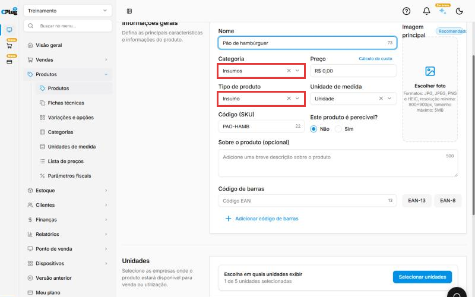
Nos prints, o quadrado vermelho mostra onde você deve clicar ou digitar.
Abra a ficha técnica do produto
No menu do lado esquerdo, clique em Produtos e depois em Fichas técnicas. A lista mostra todos os produtos.
Na linha do produto, clique nos três pontinhos e depois em Editar.
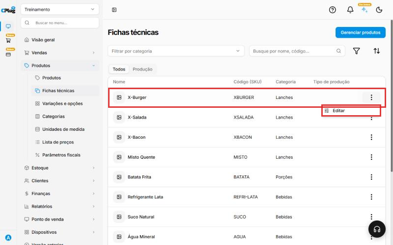
Outros recursos da lista:
- Todos e Produção: a aba Produção mostra só os produtos que já têm ficha técnica, com o Tipo de produção de cada um.
- Gerenciar produtos: abre a lista de Produtos, para cadastrar ou mudar produtos e insumos.
- Filtrar por categoria e a busca por nome ou código.
- O funil abre o painel Filtrar: por Tipo do produto (Simples, Coleção, Insumo, Processo produtivo, Produção automática), por Estoque (com ou sem estoque), por Variações e por faixa de Preço. Clique em Aplicar filtros.
- As setas ordenam a lista por Data de criação ou Nome, em ordem Crescente ou Decrescente.
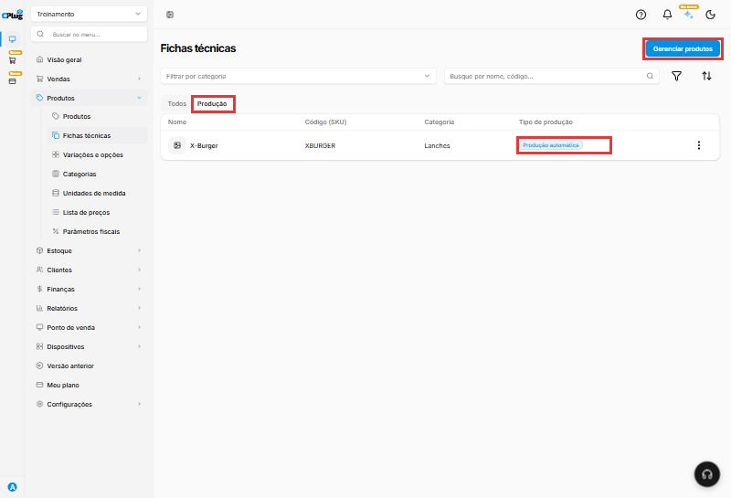
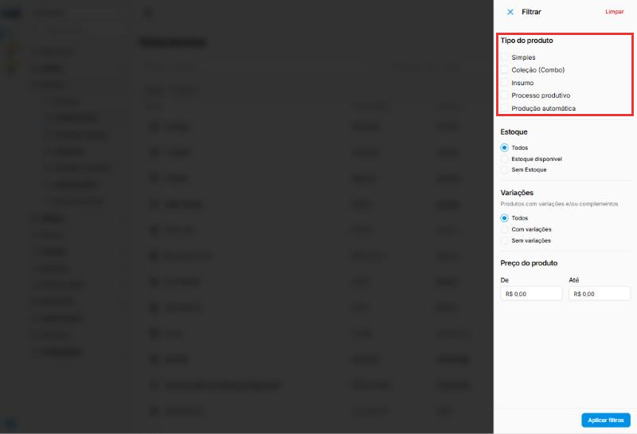
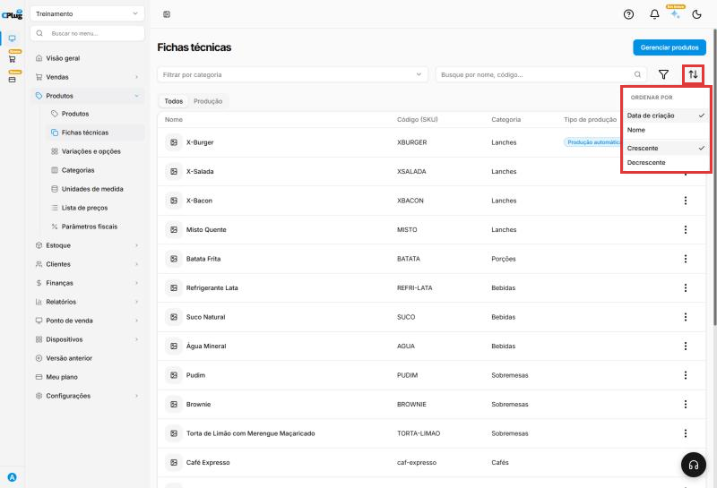
Escolha o tipo de produção
No topo da ficha, escolha:
- Produção automática: o sistema dá baixa nos ingredientes no momento da venda. É o caso de lanches, pratos e bebidas preparados na hora.
- Processo produtivo: você produz antes (um bolo inteiro, uma panela de molho) e registra a produção. Os ingredientes saem do estoque e o produto pronto entra. Depois, a venda tira do estoque do produto pronto.
No Processo produtivo, a coluna Opcional e o campo Máximo de componentes a remover somem: tirar um ingrediente a pedido do cliente só existe na venda, com a produção automática.
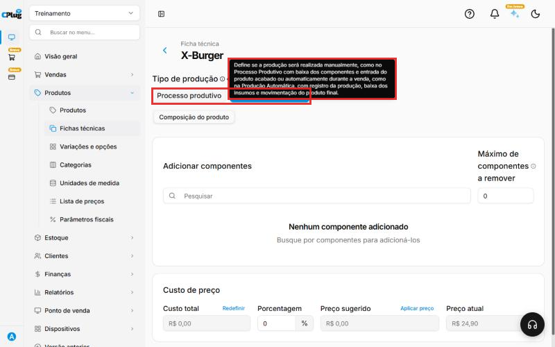
Trocou o tipo? Confira o máximo de ingredientes a remover
Ao trocar o tipo de produção, o Máximo de componentes a remover volta para 0, mesmo que você volte para Produção automática. Digite o número de novo antes de salvar.
Adicione os ingredientes
Em Adicionar componentes, clique em Pesquisar, digite parte do nome do ingrediente e clique nele na lista. Repita para cada ingrediente.
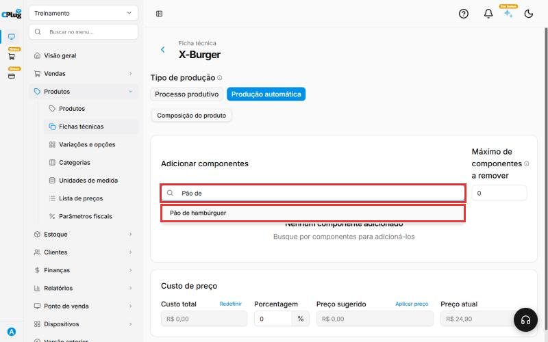
Preencha quantidade, custo e opcionais
Para cada ingrediente da lista:
- Quantidade: quanto vai em um produto, na unidade do insumo. Exemplo: 1 pão, 1 hambúrguer, 1 fatia de queijo.
- Custo: o custo de uma unidade do insumo. Ele vem do cadastro do insumo, mas pode vir zerado: confira sempre. Se vier, digite o custo ou use Recalcular custo (passo 6).
- Custo total: a conta é feita sozinha: Quantidade × Custo. Exemplo: 2 pães de R$ 1,20 dão R$ 2,40.
- Opcional: marque os ingredientes que o cliente pode pedir para tirar (por exemplo, o molho).
Em Máximo de componentes a remover, informe quantos ingredientes opcionais o cliente pode tirar de uma vez. Exemplo: 1.
A alça ≡, no começo da linha, muda a ordem dos ingredientes.
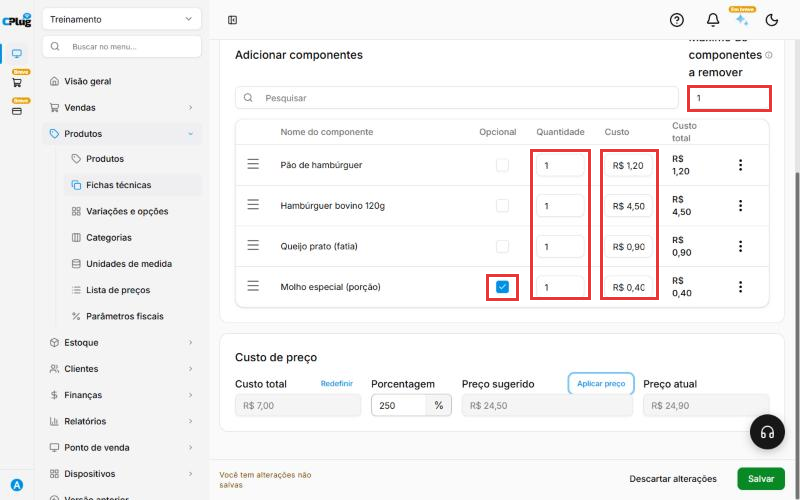
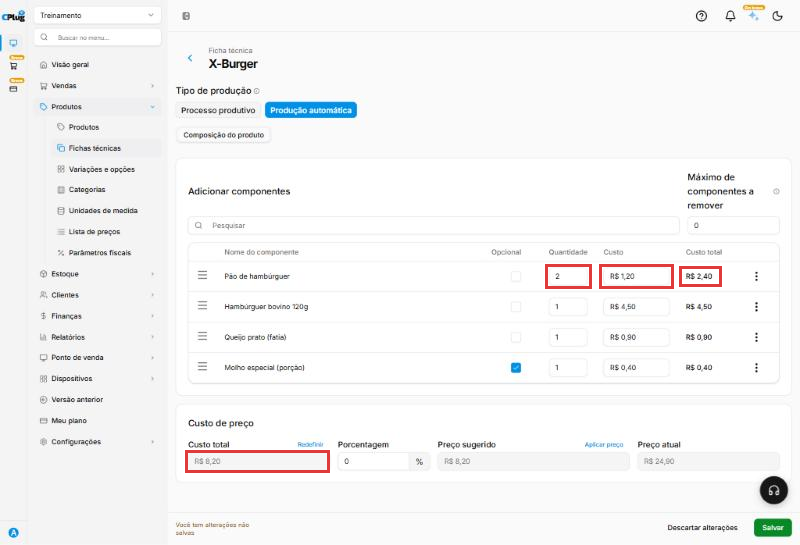
Confira o custo e o preço sugerido
Em Custo de preço:
- Custo total: a soma dos custos totais dos ingredientes. No exemplo, R$ 7,00.
- Porcentagem: quanto você quer ganhar em cima do custo. Digite o número inteiro: para 250%, digite 250.
- Preço sugerido: o custo mais a porcentagem. No exemplo, R$ 7,00 + 250% = R$ 24,50.
- Preço atual: o preço de venda de hoje.
- Redefinir: apaga a Porcentagem e o Preço sugerido para recomeçar a conta. Não mexe nos custos.
Para trocar o preço de venda pelo preço sugerido, clique em Aplicar preço. Abre a janela Aplicar preço sugerido: clique em Confirmar. O Preço atual muda na tela, mas só fica gravado quando você clica em Salvar. Se clicar em Descartar alterações, o preço antigo continua.
A porcentagem serve só para a conta: ela não fica gravada na ficha. Na próxima vez que abrir, o campo volta para 0.
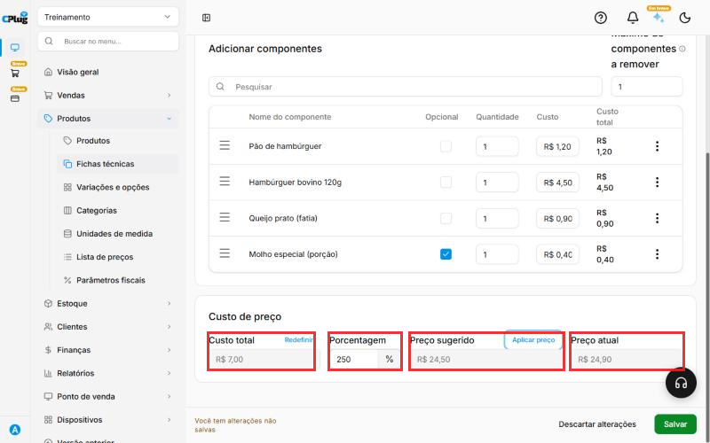
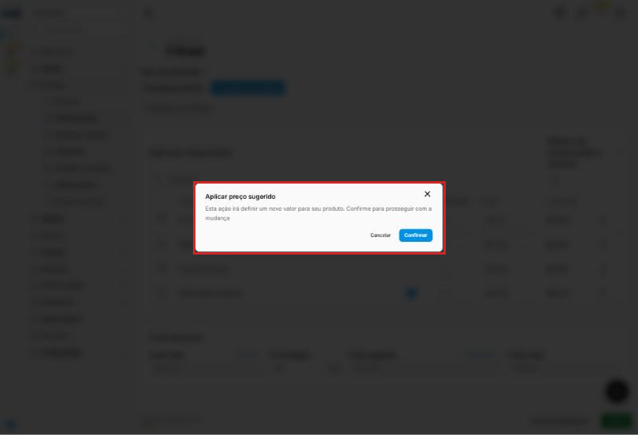
Use as opções de cada ingrediente
Nos três pontinhos no fim da linha do ingrediente:
- Recalcular custo: troca o custo da linha pelo custo que está no cadastro do insumo. Use quando o custo veio zerado ou quando o custo do insumo mudou depois que a ficha foi montada. Exemplo: o custo do pão estava R$ 9,99 na ficha; depois do Recalcular custo, voltou para R$ 1,20, o custo do cadastro.
- Remover: tira o ingrediente da ficha.
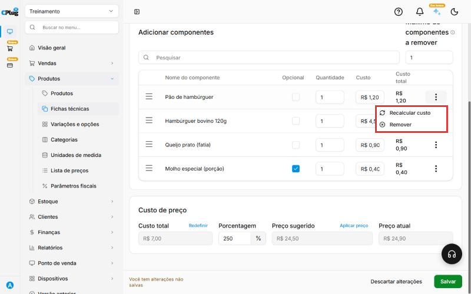
Salve e confira
Clique em Salvar, no canto de baixo, à direita. Aparece a mensagem Ficha técnica atualizada com sucesso. Para sair sem gravar nada, clique em Descartar alterações.
De volta à lista de fichas técnicas, o produto aparece com o Tipo de produção preenchido.
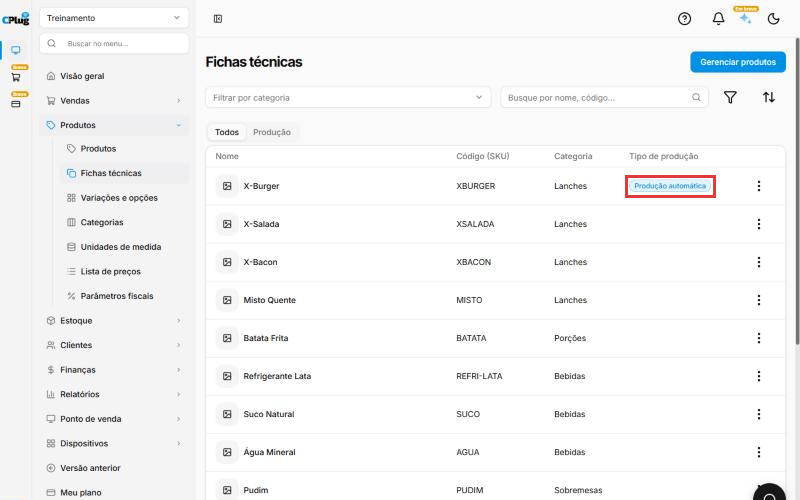
Veja em quais fichas um insumo é usado
Abra o cadastro do insumo (Produtos → clique no nome dele) e clique na aba Produções. O quadro Fichas técnicas vinculadas lista os produtos que usam esse insumo. Clique em Visualizar ficha técnica para abrir a ficha.
Isso ajuda antes de mudar o custo ou excluir um insumo: você vê quais produtos vão ser afetados.
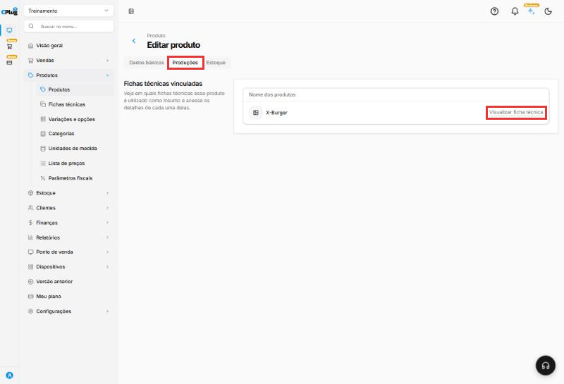
A ficha técnica só dá baixa se o insumo controlar estoque
No cadastro de cada insumo, deixe ligado Controlar quantidade em estoque. E lance o estoque inicial dos insumos, senão o saldo fica negativo a cada venda.
Boas práticas
- Cadastre o insumo na unidade em que você conta o estoque. Se você conta o queijo em fatias, cadastre em unidade; se pesa, em quilo. A quantidade da ficha usa sempre essa mesma unidade.
- Inclua as perdas. Se de cada 20 fatias uma se perde no preparo, coloque um pouco a mais na quantidade. Assim o estoque do sistema bate com o da prateleira.
- Mantenha o custo dos insumos atualizado. Quando o fornecedor aumentar o preço, atualize o insumo e use Recalcular custo nas fichas que usam esse insumo. A aba Produções do insumo mostra quais são.
- Revise a porcentagem quando o custo mudar. Se o custo subiu e o preço ficou igual, o seu lucro diminuiu.
- Marque como Opcional só o que pode ser tirado de verdade. O pão de um X-Burger não é opcional; o molho, sim.
- Teste depois de montar. Faça uma venda de teste e confira, no estoque, se os insumos saíram nas quantidades certas.
Deu algum problema?
O custo dos ingredientes apareceu como R$ 0,00
Digite o custo de cada ingrediente na coluna Custo ou use Recalcular custo nos três pontinhos da linha. Confira o Custo total antes de salvar.
O ingrediente não aparece na pesquisa
Confira se ele foi cadastrado como produto na mesma loja e com o tipo Insumo.
Mudei a porcentagem e o preço de venda não mudou
O preço só muda quando você clica em Aplicar preço, confirma e depois clica em Salvar.
O custo total do ingrediente ficou maior do que eu esperava
O Custo é o de uma unidade do insumo, e o sistema multiplica pela Quantidade. Confira se a quantidade está na mesma unidade de medida do insumo (unidade, quilo, grama...).
Os clientes não conseguem mais tirar ingredientes
Confira o Máximo de componentes a remover. Ele volta para 0 quando o tipo de produção é trocado.
Relacionados: Como cadastrar um produto · Como cadastrar uma unidade de medida
ficha técnica receita composição ingredientes insumo insumos componentes baixa de estoque custo do produto preço sugerido margem porcentagem markup aplicar preço produção automática processo produtivo opcional sem cebola remover ingrediente recalcular custo redefinir custo total quantidade aplicar preço sugerido fichas técnicas vinculadas produções filtro ordenar